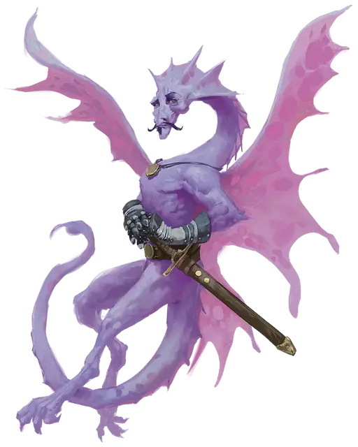

Сэр Талавар
Sir Talavar
Крошечный Дракон, законно-добрый, именной НИП

Класс Доспеха 15
Хиты 14 (4к4 + 4)
Скорость 10 футов, летая 60 футов
| мод | спас | ||
|---|---|---|---|
| СИЛ | 3 | −4 | −4 |
| ЛОВ | 20 | +5 | +5 |
| ТЕЛ | 13 | +1 | +1 |
| мод | спас | ||
|---|---|---|---|
| ИНТ | 14 | +2 | +2 |
| МДР | 12 | +1 | +1 |
| ХАР | 16 | +3 | +3 |
Навыки Восприятие +3, Магия +4, Скрытность +7
Чувства тёмное зрение 60 футов, пассивное Восприятие 13
Языки Общий, Драконий, Сильван, Эльфийский
Опасность 2 (450 опыта)
Бонус мастерства +2
Особенности
Врождённое колдовство. Базовой характеристикой сэра Талавара является Харизма (Сл спасброска от заклинаний 13). Он может от природы накладывать множество заклинаний, не затрачивая материальных компонентов. По мере того, как дракон стареет и меняет цвет, он получает дополнительные заклинания, как показано ниже:
• 1/день: сверкающие брызги [color spray] (Оранжевый), отражения [mirror image] (Жёлтый), внушение [suggestion] (Зелёный), образ [major image] (Голубой), мираж [hallucinatory terrain] (Синий), превращение [polymorph] (Фиолетовый);
• 1/день каждое: пляшущие огоньки [dancing lights], волшебная рука [mage hand], малая иллюзия [minor illusion].
Превосходная невидимость. Сэр Талавар может бонусным действием магическим образом стать невидимым, пока концентрируется (как при концентрации на заклинании). Всё снаряжение, которое дракон несёт или носит, становится невидимым вместе с ним.
Ограниченная телепатия. При помощи телепатии сэр Талавар может магическим образом общаться со всеми другими волшебными дракончиками в пределах 60 футов.
Сопротивление магии. Сэр Талавар совершает с преимуществом спасброски от заклинаний и прочих магических эффектов.
Действия
Крошечный меч +1. Рукопашная атака оружием: +8 к попаданию, досягаемость 5 футов, одна цель. Попадание: 8 (1к4 + 6) колющего урона.
Укус. . Рукопашная атака оружием: +7 к попаданию, досягаемость 5 футов, одно существо. Попадание: 1 колющего урона.
Благодушное дыхание (перезарядка 5–6). Сэр Талавар выдыхает облако газа, вызывающего эйфорию, на одно существо, находящееся в пределах 5 футов от него. Цель должна преуспеть в спасброске Мудрости Сл 11, иначе в течение 1 минуты не сможет совершать реакции, и в начале каждого своего хода должна будет бросать к6, чтобы определить своё поведение в этом ходу:
• 1–4. Цель не совершает ни действия, ни бонусные действия, и всё своё перемещение тратит на перемещение в случайным образом выбранном направлении.
• 5–6. Цель не перемещается, и единственное, что может делать в этом ходу, это совершение спасброска Мудрости Сл 11, оканчивая эффект на себе при успехе.
Описание
Сэр Талавар - уважаемый член Благого двора и верный вассал Летней королевы. Многие оруженосцы сэра Талавара впоследствии стали рыцарями с большой славой. Почтенный волшебный дракончик обладает ободряющим, целеустремлённым поведением и непоколебимым чувством чести.